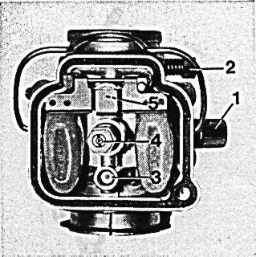
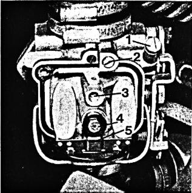
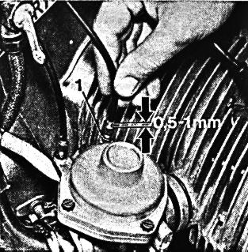
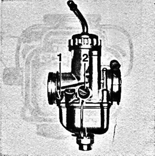
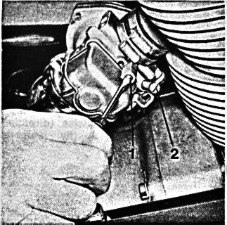
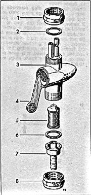

Clean carburetor
every 3000 miles,
this should be done by an authorized BMW dealer.
In an emergency,
the carburetors may be disassembled and all fuel and air passages,
float needle, main and idle jets, as well as the float bowl,
should be blown out with compressed air.
While doing this try not to turn the throttle stop screw for the
throttle slide or butterfly 1.
When reassembling, turn the idle air (idle mixture) screw or
idle mixture regulating screw 2 in fully.
Then turn back
for R 50/5 by 0,5-1,5 turns,
for R 60/5 by 1/4-11/4 turns
or
for R 75/5 by 1 turn.
Figure 39 R 50/5, R 60/5
Figure 40 R 75/5
39

40

Insert throttle slide (R 50/5, R 60/5) dry, and tighten the ring nut tightly by hand (without plyers); make certain that the locating tab of the cover is placed properly into the recess of the housing.
Insert
vacuum piston (R 75/5)
with diaphragm and needle valve without oil;
place the locating pin of the diaphragm
so that it fits into the corresponding
recess of the upper part of the carburetor.
The two pressure equalization holes in the vacuum
piston must be positioned near the butterfly.
The upper diaphragm housing has to be positioned
in such a way that the cable adjustment screws
are positioned near the butterfly and choke levers.
Insert the four screws and lock washers and
tighten crosswise.
When correctly mounted, the diaphragm, only
by its own weight, should be moveable in both
final positions on the guide bore.
Install throttle cables and adjust to a free play
of (.02--.04"), with throttle grip closed.
If necessary, adjust cables by loosening lock nut
(wrench size 9) and make preliminary adjustment.
Turning adjustment screw to the left reduces free play,
turning it to the right increases it.
Both cables have to be adjusted exactly alike.
Figure 41
41

Adjust the idle while the engine is running, and after it has reached normal operating temperature, with the throttle fully closed. Put adaptor (antistatic cartridge Beru EP 1) into spark plug cap. This prevents the spark plug cap from being damaged while it is removed from the spark plug and is placed on the cylinder while the engine is running. The proper idling speed is between 600 and 800 RPM. If the engine idles at that speed, check for even speed of both cylinders by alternately removing the spark plug cap. Observe the tachometer or listen for even running during this check.
If the speed of both cylinders is uneven or if the idle speed is insufficient or excessive, adjust the carburetors as follows: model R 50/5, R 60/5: correct this by adjusting the slide stop screw 2, clockwise to increase, counter-clockwise to decrease speed.
For finding the most favorable petrol mixture turn idle air
screw 1 carefully in either direction.
The correct mixture adjustment has been found when the cylinder
runs the fastest.
Lock idle air regulating screw.
Perform the same operations on the opposite carburetor.
Figure 42, R 50/5, R 60/5
Figure 43, R 75/5
42

If the engine speed is now still not the prescribed 600-800 RPM, it can be decreased by turning the throttle slide or butterfly stop screws 2 on both sides simultaneously counter-clockwise or it can be increased by turning them clock-wise.
Model R 75/5
Adjust calbes of the starting device exactly alike to a free play
of .02-.04".
Back off completely on both carburetors the cable adjustment screw,
so that the butterfly lever is not suspended on the throttle cable.
Position the idle mixture regulating screw 1
and the butterfly stop screw 2 of both carburetors into the basic
setting: for this purpose, turn the idle mixture regulating screw
in fully, then turn it counterclockwise one turn.
Turn the butterfly stop screw inward until it just contacts
the stop of the butterfly lever;
then turn the butterfly stop screw inward one turn.
Operate cold engine to normalize engine temperature;
axtuate choke for starting.
Turn idle mixture regulating screw of both carburetors carefully in either direction until best engine idle "Feel" is obtained (when cylinder runs the fastest).
Continue carburetor adjustment alternately on the left and right carburetor. Gradually back off the butterfly stop screw and after each turning motion try to obtain best posssible idle speed by means of the idle mixture regulating screw. Repeat this procedure until the cylinder to be adjusted ceases to function after a few working strokes, when operating alone (spark plug cap of the opposite cylinder being with-drawn and provided with adaptor). According to recent experience, the correct mixture adjustment has been found when the engine idles at 600-800 RPM.
Caution:
never allow the engine to idle for more than 10 minutes.
Figure 43 R 75/5
43

To adjust the transition from idling to the part load range, turn the throttle slightly so that the idling speed increases slightly. Check by alternately removing the spark plug cap whether both cylinders operate evenly. If necessary, adjust the throttle cable of the slower cylinder to have less free play. Secure with hex nut (wrench size 9).
Fuel Petcock
Disassemble adn clean the
screen of the fuel petcock
every 6000 miles.
1. Close the fuel petcock -- lever 4 points down
2. Unscrew octagonal nut 8 (wrench size 24).
3. Remove hose connection 7 and screen 5,
clean screen in gasoline and blow out.
4. Replace gasket 6, if damaged.
Reassemble screen 5.
To remove the fuel petcock
1. Empty fuel tank.
2. Nut 1 (wrench size 24) has a right-hand thread
on the fuel tank side
and a left-hand thread on the petcock side.
Turn the nut to the left while holding the fuel 3;
remove fuel petcock 3 and nut 1.
3. Use new gasket 2 for reassembly.
Position wider smooth portion of nut 1 up,
and make both threads of nut 1
engage the fuel petcock and the fuel tank simultaneously.
Caution -- the fuel tank should never be completely
empty of fuel so that the gasket will not dry out.
